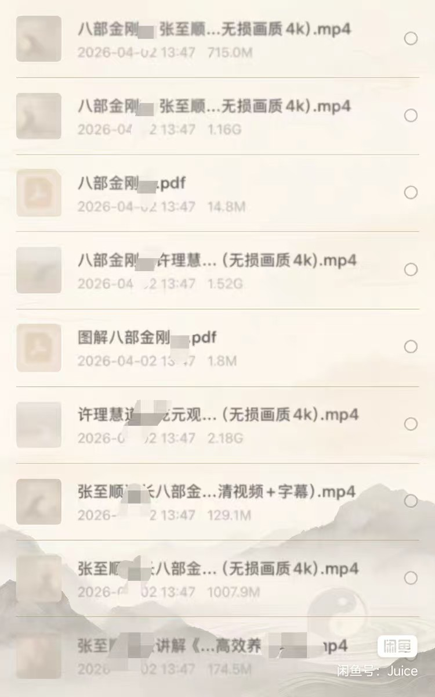

VIDEO 01
张至顺道长演示视频
收录八部金刚功相关演示、讲座与讲解视频，包含高清和无损画质版本。
- 多角度演示内容
- 高清 / 4K 文件
- 字幕版本
资料内容
资料按使用场景分类，避免重复文件混在一起。以下为图片中能够确认的内容方向，完整名称、数量和文件大小以最新目录为准。
VIDEO 01
收录八部金刚功相关演示、讲座与讲解视频，包含高清和无损画质版本。
VIDEO 02
适合按节奏跟随练习的版本，并包含动作顺序和关键环节讲解。
AUDIO 03
将适合听学的内容独立整理，便于通勤、散步或复习时使用。
BOOK 04
包含可确认的八部金刚功 PDF 和图解资料，便于查看动作次序。
LECTURE 05
资料列表中包含许理慧等相关演示或讲解内容，完整标题以目录为准。
ARCHIVE 06
将相同内容的不同版本进行标注，帮助你了解画质、字幕和用途差异。
资料实拍
原始列表包含多个视频版本及 PDF 文件，单个视频从百余 MB 到约 2GB 不等。部分文件名在图片中被遮挡，因此页面不对缺失文字进行推测。

建议使用顺序
先完整观看一遍，建立八部动作的整体顺序。
结合讲解和图解，逐步理解动作路线与节奏。
根据设备、画质和字幕需要选择合适的视频。
循序渐进，不勉强、不追求一次做到位。
获取最新目录
添加后可查看当前可提供的文件目录、格式、大小和版本说明。购买或获取前请先确认内容是否适合你的设备与学习需要。

八部金刚功属于传统功法学习内容，练习应量力而行；老年人、慢性病患者、孕期人士或近期有伤病者，建议先咨询专业人士。本页仅展示资料目录，不构成医疗或康复建议。相关视频、录音、书籍与图解可能受著作权保护，本站只提供原创整理、公共领域或取得合法授权的版本。